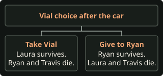

Choose a starting point
Character replays · Abi and Nick’s pool-house, shelter and cage routes · Dylan’s bites and lodge routes · Emma’s van, shelter and woods routes · Jacob’s lake, cages and woods routes · Kaitlyn’s scrapyard, lodge and freezer routes · Laura and Max’s station, attic and island routes · Ryan and Travis’s attic, car and nest routes
- Save Caleb and all nine counselors
- Start in Chapter 9 with Abi, Emma, Jacob, Dylan and Kaitlyn alive, Nick protected in his cage, and Travis unharmed. Use the crane and lodge choices that match your cabin decision. For the no-rabbit freezer rescue, Dylan needs both hands and no active bite when he reaches the crane.
- Spare Chris or keep Silas alive
- Start in Chapter 9 for the attic branches. Start in Chapter 10 for the vial replays if the hunt and the blood vial are already set up. If you missed the vial, replay Chapter 3.
- Go straight from Chapter 9 to the epilogue
- Start in Chapter 4 to kill Jacob and infect Emma. Replay Chapter 1 if you want Dylan to survive and the cabin was left locked.
- Collect ten evidence items and get both acquittals
- Start at the earliest missing evidence pickup. You can replay Chapter 10 for both headlines if all nine counselors are alive, Kaitlyn took the crane bite, Abi has silver in the office, the hunt is active, and you already have the first nine items.
For a fresh save, use Rough Night through Chapter 8 before making the Chapter 9 changes here. Keep Aim Assist off and time directional prompts, mashes, Don’t Breathe, and interrupts manually. Pass each input unless the route asks you to miss it. Continue past Death Rewind after planned deaths. Input settings · Chapter Select rules
Find a pickup on this route
This list covers Chapter 9 and the lodge in Chapter 10. Find earlier items in Rough Night. Full collectible checklist
Chapter 9 · Shared setup
Keep the Hacketts alive at the house

Laura and Ryan · Escape Constance and Bobby
- On the road as Dylan, choose Curious → Curious with both hands or Positive → Curious if he lost his hand.
- Fail the shotgun mash to spare Constance, then choose Run and press Right to dodge her shot. Bobby stabs Ryan in the next scene.
- Let Pull Knife? expire. Take any pickups while the bedroom timer is running. You have three minutes with standard PC timing.
Optional evidence · Kaylee’s Letter
Open the jewelry box on the dresser to the right of the fireplace. Pickup video
Optional tarot · Death
Cross the bedroom toward the bed and take the card at the camera change. Finish before using the left door. Card and pickup video
- Check the left door’s keyhole. Choose Block Door and pass both mashes. Keeping the knife leaves the later Stab choice under your control. Door and cabinet alternatives
Laura · Let Jedediah live
- Choose Hide and pass Don’t Breathe in the bathtub. Skip the piano in the blue room and head upstairs. Get the pickups before approaching the upstairs door. House clue locations
Optional tarot · The Sun
Go beyond the upstairs office and approach the windows before the next door. Step away and walk back if the prompt expires. Card and pickup video
- Approach the door and press Left, Left, Left in the fight. Choose Run. Laura cuts the power after leaving Jedediah alive.
Ryan · Let Bobby protect his family
- Press Left → Right at the wall gap and pass Don’t Breathe. Let Stab expire when Bobby catches up. He can fight off Chris later and protect himself, Constance and Jedediah.
- Choose Sympathetic → Accept and let Pull Away? expire if you want the hunt. For Laura’s capture branch, choose Decline. If Ryan shoots Laura, Chris kills him either way.
Dylan · Set up the lodge outcome at the crane
- Follow the path to the right of the cars into the garage. Use the gate switch on the table by the downstairs stairs. Cross through the gate and climb the metal steps onto the containers. All scrapyard pickups
Optional tarot · Judgement
Cross the container roofs until the camera reveals the card. Take it before descending and heading through the bus. Card and pickup video
- Climb down the far stairs, cross through the wrecked bus and go left to the yellow crane. Choose Encouraging → Lift Car.
- Dylan’s late bite · No-rabbit freezer rescue
- With Dylan uninfected and both hands intact, choose Sound Horn. Pass the mash to light the torch. Miss Left to let Silas bite Dylan, then pass the recovery mash to get the torch back. Pass the final lever mash to keep Kaitlyn unbitten.
- If you plan to spare Chris, Dylan can use Emma’s van bite for the rescue. Give Emma the island bite and preserve it through Chapter 6. At the van choose Shoot and hit Emma, miss the roof shot, hit her in the rescue window after Dylan is bitten, and choose Regular Shot. At the crane choose Slam Car and pass the lever mash. Van shot timers
- Bite both counselors · Kitchen attack
- Use the torch steps above to infect Dylan, then fail the final lever mash. Check that Kaitlyn takes the ankle bite. Both leave for the lodge.
- Bite Kaitlyn only · Beam or rabbit rescue
- Choose Slam Car, then fail the final lever mash. Kaitlyn is bitten. Dylan escapes without taking a new bite. Keep his earlier radio-hut bite cleared so he can follow her to the lodge.
- Keep both unbitten · Silver shot
- Choose Slam Car and pass the lever mash. If Dylan entered without an active bite, both get away uninfected. This is the direct setup to shoot Caleb.
Abi · Get the shell and reach the office
In the storm shelter, check the lit fuse box across from the stairs for silver. Climb the ladder into Chris’s office. If Abi is alone she can do this herself. Uninfected Emma can do it alone if Abi died. Shelter layout and available branches
Optional tarot · The Hierophant
Approach the staircase before using the ladder. Take the card at the camera change. It replaces Eliza’s reading with a flashback at the end of the chapter. Press Left when the stake flies at her. Card and pickup video
Ryan · Choose the attic target
- As Laura, approach Chris to advance the scene. She transforms and they fall through the floor. Bobby fights off Chris if you spared him.
- As Ryan, aim and fire within the 4.1-second base window. For the hunt, hit Chris, directly in front of Ryan, then choose Suspicious if Ryan took the bite and Travis is unharmed. For the Chris survival branch, aim all the way right and hit Laura. Compare the attic targets
- Choose Move On at Eliza’s interlude if offered. If you took The Hierophant, the flashback takes its place.
Chapter 10 · Caleb survival branches
Get Caleb out of the lodge alive

- If Chris is dead and you play as Max, walk to the dock and choose Stay. If you spared Chris, the game skips Max’s island scene.
- As Kaitlyn, go upstairs and find the Ancestral Portrait on the chimney wall. Choose Keep Looking if you still want to explore.
Optional tarot · The High Priestess
Take the stairs next to the bunk room and approach the windows on the top floor. Take the card at the camera change. Card and pickup video
Optional evidence · Trail Cam Footage
Inspect the boxes near the couch on the upper floor before starting the attack. Collect the footage again on each Chapter 10 replay for the acquittal headlines. Pickup video
- Return to the portrait and choose Prepare for Attack.
- If Chris is alive and you freed an uninfected Jacob, Chris chases him in the woods. Choose Run, pass the mash and press Up to avoid the snare. Chris gets caught alive. Missed inputs and recoveries
- At the lodge attack choose Run → Beam. Follow the branch below that matches the bites and rabbit in your save.
Kaitlyn bitten · Fall from the beam
Fail the balance mash, then miss Up. Kaitlyn falls and survives because of her active bite. Dylan survives separately. Caleb leaves.
Dylan bitten · Let him free Kaitlyn
- Pass the beam mash or the Up recovery. Choose Run again to head downstairs. If Abi or Emma knocks from the office, choose Run at that choice too.
- Pass Don’t Breathe in the kitchen. Choose Freezer. Without the rabbit, Kaitlyn hides inside automatically. If you do have it and the choice appears, choose Hide.
- Dylan stays outside and Caleb spares him because of the late bite. He opens the door for Kaitlyn after Caleb leaves. Freezer rescue recap
Both bitten · Let Caleb catch them
Pass the beam mash and choose Run downstairs. Choose Run again if offered at the office. Fail Don’t Breathe in the kitchen. Caleb leaves both alive because they carry active bites. What happens if one bite is missing
Kaitlyn bitten and rabbit kept · Dylan frees both
- Start in Chapter 1 if needed. As Abi choose Break In, check the rabbit on the cabin shelf and choose Keep. In Chapter 5 choose Desperate → Chainsaw and pass the mash to remove Dylan’s bitten hand. In Chapter 9 give Kaitlyn the lever bite.
- At the lodge, pass the beam mash, choose Run downstairs, and choose Run if offered the office handoff. Pass Don’t Breathe, choose Freezer → Use Decoy, then fail the door mash.
- Caleb pulls Kaitlyn inside. Her bite saves her from Caleb. Dylan is outside and can open the door for both, whether Silas lives or dies. Freezer outcome chart · Recorded cured and infected rescues
Rabbit kept · Leave Caleb trapped alive
Pass the beam mash, choose Run downstairs and bypass the office. Pass Don’t Breathe, choose Freezer → Use Decoy and pass the door mash. Caleb stays inside and Kaitlyn stays outside. Keep Silas alive so the curse protects Caleb from the cold. Caleb’s recap
After the beam fall, kitchen attack or freezer rescue, finish the hunt and shoot Silas if your goal is to cure the surviving werewolves. Caleb can survive those branches even after the curse lifts.
Audit · Steam PC build 11105655, the torch and lever bites, lodge infection checks and freezer recap selection. Recorded Caleb survival branches
Chapters 9 and 10 · Chris survives
Spare Chris and Silas
- Use the survival setup through Chapter 8. Hit Nick at the pool house in Chapter 6. In Chapter 7 sedate Travis with the syringe. In Chapter 8 take Stop Laura, then Help Jacob. Use breakers 1 + 2 → Continue → 2 + 3.
- In Chapter 9, spare Constance, Jedediah and Bobby. At the crane give Kaitlyn the lever bite or set up Dylan’s late bite for the freezer rescue.
- In the attic aim far right and shoot Laura. Chris kills Ryan, and Travis escapes. Letting the shot expire instead kills Travis as well.
- Prepare for the lodge attack, then save Jacob with Run → mash → Up when Chris chases him. At the lodge choose the beam fall with infected Kaitlyn or the freezer rescue with infected Dylan. Caleb lives. With Chris alive there is no island scene or Silas hunt.
On this route, Laura, Ryan and Kaylee die. Max and Nick are alive and still infected. Max’s recap · Travis’s recap · Recorded attic shot at 34:17
Kill Caleb and keep Chris alive
- Use the same Chapter 8 and attic setup. Pass the crane lever mash and send Abi up the ladder with silver from the shelter fuse box.
- At the lodge, prepare for the attack. When Chris chases Jacob, choose Run, pass the mash and press Up. Back at the lodge choose Run → Beam, pass the mash or press Up to recover, then choose Run → Investigate. Hit Caleb during the three-second silver-shot window.
- In the credits, Nick’s recap says he is cured. Max’s recap still labels him infected, using the outcome set when Chris was spared. Chris remains a werewolf. Nick’s recap · Max’s recap and PC state notes
Chapter 10 · Blood vial replays
Spare Silas at the nest
- In Chapter 3 as Ryan, choose Worried → Assertive and take both shortcuts. Pass the chase prompts. When you see Bobby holding Nick, take Shout? and hit Bobby with the first shot. Ryan picks up the dropped blood vial. Check the pickup under Paths → Finders Keepers. Exact chase inputs and aiming window
- Sedate Travis in Chapter 7. In Chapter 9 choose Accept and let Pull Away? expire as Ryan. Shoot Chris, then choose Suspicious to set up the hunt. If the hunt and vial are already set up, use Chapter Select and begin with the next step.
- After the island and lodge, choose Inquisitive in the car. Press Right at the attack, choose Grab Gun → Take Cover, then press Down to pull the handbrake.
- Choose Determined outside. Choose Take Vial to save Laura or Give to Ryan to save Ryan. Choose Probing → Reflective as you follow the trail.
- At the cage, take Raise Gun within six seconds. Hold fire for the whole aiming window. Silas kills Travis and the person without the blood. Without the vial, all three die. Seven nest branches and recoveries

Keep Silas, Laura and Travis alive by skipping the hunt
- Leave Travis unharmed in Chapter 7. In Chapter 9 choose Decline when Laura offers Ryan the bite, then shoot Chris as Ryan.
- Ryan bleeds out. As Laura, miss Up during the shotgun grab. Travis takes Laura to the basement alive. The hunt is skipped and the remaining curse stays active.
- Play Max’s island scene and choose Stay. Finish the lodge outcome you set up. Laura’s capture recap and footage
Audit · Steam PC build 11105655, Ryan’s bite, Laura’s shotgun grab, the two vial flags and nest survival checks.
Chapters 4 to 9 · Skip the finale
Go straight to the epilogue
Keep Chris alive, kill Jacob before the woods, and prevent Kaitlyn from reaching the lodge. The three variants below leave Max, Emma and Nick alive and infected. Chapter 10’s achievement and its lodge pickups are skipped.
Chapter 4 · Kill Jacob and infect Emma
- At the firepit choose Apply Pressure?, pass the mash, choose Dismissive and take Call Out?. Hold fire during the first aiming window. When Ryan raises the gun again, hit the movement in the bushes in the six-second window. If Jacob walks out, the shot missed.
- As Emma, start at the dock and head up to the treehouse. Choose Search Bag → Use Taser, then press Down, pass the zipline mash, choose Spray and press Up twice.
- Back in the treehouse, choose Use Trapdoor immediately. Miss Down at the cabinet to get the arm bite, then press Right to recover and pass the ladder mash. At the later zipline choose Reel Slowly and let Speed Up expire. Chapter 4 tarot and Attack Photo
Chapters 5 to 8 · Choose who is alive after the van
- For Abi alive, leave Dylan uninfected by keeping the cabin locked in Chapter 1 or using Desperate → Chainsaw if he is bitten at the radio hut. As Abi in Chapter 6, choose Calm → Compassionate and hit Nick to save her.
- For Dylan alive, break into the cabin in Chapter 1 and choose Terrified when he is bitten at the radio hut. This keeps the bite active. As Abi in Chapter 6, choose Calm → Compassionate and let the shotgun timer expire. Nick kills her.
- For Abi and Dylan dead, keep Dylan uninfected as above and let the shotgun timer expire as Abi. On every branch, skip Run at Emma’s encounter with the hunters so the island bite still sends her into the van fight. Leave Travis unharmed in Chapter 7 if you want him alive. Syringe steps and station tarot
- Abi alive at the van gives Kaitlyn Shoot. Take it and hit Emma in the 2.2-second opening window. Let the roof shot expire. After Emma bites Dylan, let the 3.9-second rescue window expire too. Emma kills Dylan outside the van, while Abi survives.
- Abi dead at the van gives Kaitlyn Run. Take it. Infected Dylan is spared. Uninfected Dylan is killed. On both van branches Kaitlyn goes to the scrapyard alone. In the Hackett basement take Stop Laura to leave Nick alive. Jacob’s cage scene is skipped.
Chapter 9 · Stop Kaitlyn before the lodge
- As Kaitlyn, follow the garage route, flip the gate switch downstairs, climb the containers and cross through the bus. Pick up Judgement before the crane.
- To keep Kaitlyn alive, choose Hide in the car and fail Don’t Breathe to take Silas’s bite. Hit Silas with the shotgun. Pass the mash to pull the bar, then miss Left. The bite lets Kaitlyn survive under the scrap, which skips both lodge scenes.
- To kill Kaitlyn, choose Gun and let the shot expire. If Abi survived the van, she can still collect The Hierophant in the shelter. If Abi died and Emma turned at the van, that exploration is skipped.
- As Ryan, let the attic shot expire to keep Chris alive and trigger Mutually Assured. To save Travis, shoot transformed Laura on the far right instead. After Eliza’s Chapter 9 interlude, the game advances to the epilogue. Trapped Kaitlyn recap · Chapter 10 achievement
Audit · Steam PC build 11105655, the van outcomes, the scrap trap and the Chapter 10 entry conditions. The combined survivor variants were traced in the game files. Recorded van death · Recorded solo scrapyard branch
Evidence · Two podcast endings
Get both acquittal headlines
- Follow Rough Night. Take the Empty Vial, Torn Bags and Bloated Corpse in Chapters 1 to 3. Steal the rotor arm in Chapter 1 so Jacob gets the dive in Chapter 3.
- Take the Attack Photo, Claw Marks, Memory Card, Cease & Desist Letter, Scarred Flesh and Kaylee’s Letter in Chapters 4 to 9. Keep every counselor alive, protect the Hacketts in Chapter 9, infect Kaitlyn at the crane, and bring Abi’s silver to the office.
- As Max choose Stay. At the lodge take Trail Cam Footage before choosing Prepare for Attack. Check that you have all ten evidence items in the game.
- For the local-girl shooting opening, choose Run → Beam, then fail both the mash and Up. Infected Kaitlyn survives the fall and Caleb lives. Kill Silas at the nest and let the podcast finish. Self-defense acquittal newspaper
- For the family-killed opening, replay Chapter 10 and pick up the footage again. Choose Run → Beam, pass the mash, then Run → Investigate. Hit Caleb with the silver shot and kill Silas as before. All nine counselors still survive. Case reopened and teens acquitted newspaper
Audit · Steam PC build 11105655. The opening checks all nine counselors, then Bobby, Constance, Jedediah, Travis and Caleb. With ten evidence items, the closing follows the opening. The Caleb survival version is recorded. The alternate replay follows the same selectors. Recorded headlines from 49:30 · Full newspaper rules and images